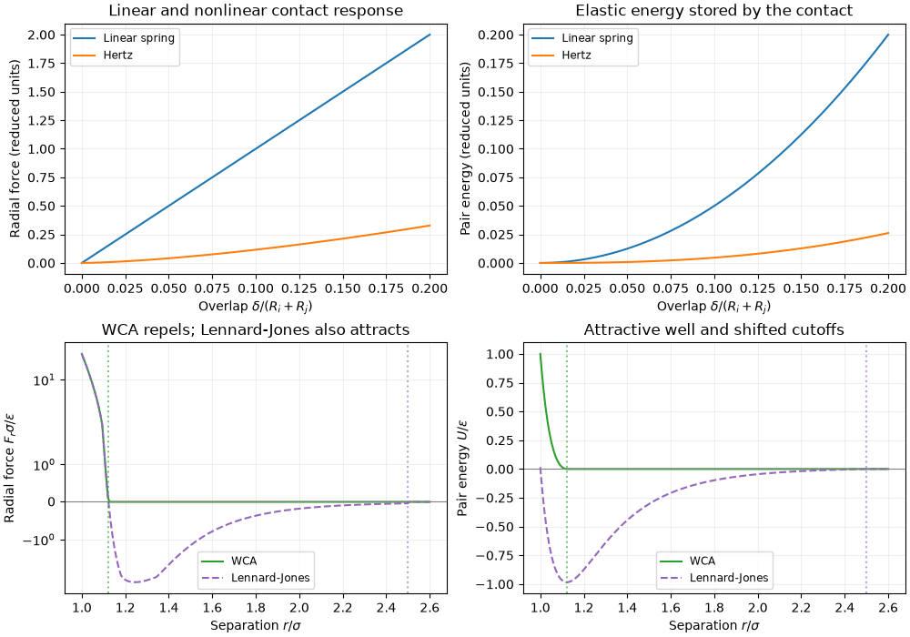

Note
Go to the end to download the full example code.
Force Models#
A ForceModel defines the pairwise interaction
law between two particles. The collider evaluates it for every
interacting pair. It returns a force vector and a torque.
This guide covers:
The available (registered) force models.
How materials supply the parameters each model needs.
Combining several laws with
LawCombiner.Species-wise interactions with
ForceRouter.Contact history for stateful force models.
Selecting a Force Model#
You choose the force model with the force_model_type string when
creating a System:
import jax
import jax.numpy as jnp
from dataclasses import dataclass
import matplotlib.pyplot as plt
import numpy as np
import jaxdem as jdem
state = jdem.State.create(
pos=jnp.array([[0.0, 0.0], [1.5, 0.0]]),
rad=jnp.array([1.0, 1.0]),
)
system = jdem.System.create(state.shape, force_model_type="spring")
print("Force model:", type(system.force_model).__name__)
Force model: SpringForce
Available Force Models#
JaxDEM ships with several pairwise force models registered in the
ForceModel factory. You select one via
force_model_type when calling create().
system_spring = jdem.System.create(state.shape, force_model_type="spring")
print("spring →", type(system_spring.force_model).__name__)
# WCA/LJ models require an ``epsilon_eff`` material table.
lj_mat = jdem.MaterialTable.from_materials(
[jdem.Material.create("lj", density=1.0, epsilon=1.0)]
)
system_wca = jdem.System.create(state.shape, force_model_type="wca", mat_table=lj_mat)
print("wca →", type(system_wca.force_model).__name__)
system_lj = jdem.System.create(
state.shape, force_model_type="lennard_jones", mat_table=lj_mat
)
print("lj →", type(system_lj.force_model).__name__)
spring → SpringForce
wca → WCA
lj → LennardJones
Spring is a finite-overlap normal
force, proportional to penetration. Hertz
uses nonlinear overlap elasticity. WCA is a steep,
purely repulsive potential; Lennard-Jones
adds attraction before its cutoff. Cundall-Strack
adds damping and history-dependent tangential friction. Choose the law for
the physical assumptions, then choose a timestep that resolves its fastest
contact response; changing the law does not rescale dt automatically.
For the linear spring, let \(\mathbf r_{ij}\) be the displacement from particle j to particle i, using the domain’s minimum-image convention. Write \(r=\|\mathbf r_{ij}\|\) and \(\widehat{\mathbf n}_{ij}=\mathbf r_{ij}/r\). The overlap, force, and pair energy are
Here \(k_{ij}\) is the coefficient read from young_eff by the
spring implementation. The pair contributes no force or energy after
separation. Its force acts along the line of centers, so a sphere has no
intrinsic contact torque; the same force on an offset member of a clump
can still generate a moment about that body’s COM.
For a conservative law, \(\mathbf F_{ij}=-\nabla_i U_{ij}\) and \(U=\sum_{i<j}U_{ij}\) counts each physical pair once. Damping and history-dependent friction require extra care: stored spring energy does not include dissipated work, and an energy gradient with history held fixed need not reproduce the complete mechanical force.
The following ForceModel implementations are registered:
print("ForceModels:", list(jdem.ForceModel._registry.keys()))
ForceModels: ['cundallstrack', 'hertz', 'lawcombiner', 'lennardjones', 'forcerouter', 'spring', 'spherefacetspring', 'facetfacetspring', 'wca', 'wcashifted', 'granulabotcontacts', 'pairattractor']
See what each law actually computes#
Sample force() and
energy() directly for one pair. These
are constitutive response curves. The spring and Hertz models use the
same elastic material; their coefficients
have different interpretations, so their magnitudes need not agree.
For WCA and Lennard-Jones, \(\sigma=R_i+R_j\) sets the distance scale and \(\epsilon\) sets the energy scale. Positive radial force is repulsive; negative force is attractive. Notice that WCA acts out to \(2^{1/6}\sigma\), beyond the nominal radius sum. Lennard-Jones has an attractive well and, by default, an energy-shifted cutoff at \(2.5\sigma\); its force is truncated rather than force-shifted.
response_state = jdem.State.create(
pos=jnp.array([[0.0, 0.0], [1.0, 0.0]]),
rad=jnp.full(2, 0.5),
)
elastic_table = jdem.MaterialTable.from_materials(
[jdem.Material.create("elastic", young=10.0, poisson=0.3, density=1.0)]
)
def pair_response(distance, system):
positions = response_state.pos.at[1, 0].set(distance)
history = jnp.empty((0,))
force, _, _ = system.force_model.force(
1, 0, positions, response_state, system, history, advance_history=False
)
energy = system.force_model.energy(1, 0, positions, response_state, system, history)
return force[0], energy
sample_response = jax.jit(jax.vmap(pair_response, in_axes=(0, None)))
fig, axes = plt.subplots(2, 2, figsize=(10, 7), layout="constrained")
overlaps = jnp.linspace(0.0, 0.2, 120)
distances = jnp.linspace(1.0, 2.6, 240)
for law, label, color in (
("spring", "Linear spring", "tab:blue"),
("hertz", "Hertz", "tab:orange"),
("wca", "WCA", "tab:green"),
("lennard_jones", "Lennard-Jones", "tab:purple"),
):
contact_law = law in ("spring", "hertz")
response_system = jdem.System.create(
state=response_state,
force_model_type=law,
mat_table=elastic_table if contact_law else lj_mat,
collider_type="naive",
rotation_integrator_type=None,
)
sample_distances = 1.0 - overlaps if contact_law else distances
radial_force, pair_energies = sample_response(sample_distances, response_system)
row = 0 if contact_law else 1
abscissa = overlaps if contact_law else distances
# Dashes leave both laws visible where their repulsive branches coincide.
linestyle = "--" if law == "lennard_jones" else "-"
axes[row, 0].plot(
abscissa, radial_force, color=color, linestyle=linestyle, label=label
)
axes[row, 1].plot(
abscissa, pair_energies, color=color, linestyle=linestyle, label=label
)
# Check the conservative-force identity away from contact/cutoff switches.
check_distance = jnp.asarray(0.9 if contact_law else 1.3)
force_check, _ = pair_response(check_distance, response_system)
energy_slope = jax.grad(lambda r: pair_response(r, response_system)[1])(
check_distance
)
np.testing.assert_allclose(force_check, -energy_slope, rtol=2e-5, atol=1e-6)
assert np.all(np.isfinite(np.asarray(radial_force)))
assert np.all(np.isfinite(np.asarray(pair_energies)))
axes[0, 0].set(
title="Linear and nonlinear contact response",
ylabel="Radial force (reduced units)",
)
axes[0, 1].set(
title="Elastic energy stored by the contact", ylabel="Pair energy (reduced units)"
)
for ax in axes[0]:
ax.set_xlabel(r"Overlap $\delta/(R_i+R_j)$")
# A symmetric logarithmic scale keeps attraction and the steep repulsive
# branch visible together while preserving the sign and the zero line.
axes[1, 0].set_yscale("symlog", linthresh=2.0)
axes[1, 0].set(
title="WCA repels; Lennard-Jones also attracts",
ylabel=r"Radial force $F_r\sigma/\epsilon$",
)
axes[1, 1].set(
title="Attractive well and shifted cutoffs", ylabel=r"Pair energy $U/\epsilon$"
)
for ax in axes[1]:
ax.set_xlabel(r"Separation $r/\sigma$")
ax.axhline(0.0, color="0.5", linewidth=0.8)
ax.axvline(2.0 ** (1.0 / 6.0), color="tab:green", linestyle=":", alpha=0.6)
ax.axvline(2.5, color="tab:purple", linestyle=":", alpha=0.6)
for ax in axes.flat:
ax.grid(alpha=0.2)
ax.legend(fontsize="small")
plt.show()

The energy slope supplies an independent consistency check: \(F_r=-\mathrm dU/\mathrm dr\). The assertions above differentiate the library’s pair energy at an interior sample for each conservative law. They deliberately avoid cutoff points, where a branch can change its derivative. Damping and friction require work and history diagnostics in addition to these static curves; they cannot be compared solely by differentiating stored energy.
Materials and Force Requirements#
Each force model declares the material-pair properties it needs.
For example, "spring" requires young_eff while "wca"
requires epsilon_eff. A
MaterialMatchmaker computes
these effective properties automatically from per-material scalars.
When you pass mat_table=None (the default), create() builds
a single-material table with sensible defaults. For custom materials,
build the table yourself:
mat_a = jdem.Material.create("lj", density=1.0, epsilon=1.0)
mat_b = jdem.Material.create("lj", density=1.0, epsilon=2.0)
mat_table = jdem.MaterialTable.from_materials([mat_a, mat_b])
print("epsilon per material:", mat_table.epsilon)
print("epsilon_eff (pair table):\n", mat_table.epsilon_eff)
epsilon per material: [1. 2.]
epsilon_eff (pair table):
[[1. 1.33333333]
[1.33333333 2. ]]
Pass the table to create(), and assign per-particle material
IDs via mat_id in the state:
state_2mat = jdem.State.create(
pos=jnp.array([[0.0, 0.0], [1.5, 0.0]]),
rad=jnp.array([1.0, 1.0]),
mat_id=jnp.array([0, 1]), # particle 0 → mat_a, particle 1 → mat_b
)
system_2mat = jdem.System.create(
state_2mat.shape,
force_model_type="wca",
mat_table=mat_table,
)
state_2mat, system_2mat = jdem.System.initialize(state_2mat, system_2mat)
state_2mat, system_2mat = system_2mat.step(state_2mat, system_2mat)
print("Force model:", type(system_2mat.force_model).__name__)
Force model: WCA
Combining Force Models#
LawCombiner sums several
elementary force laws into one composite model. You pass it a tuple of
ForceModel instances via the laws field.
The combiner adds both forces and energies.
For child laws indexed by a, this means
These contributions must be compared at the same configuration and with material parameters that activate every child law. Below we check this identity numerically before taking any integration step.
combined = jdem.LawCombiner(
laws=(jdem.ForceModel.create("spring"), jdem.ForceModel.create("wca"))
)
print("Combined laws:", [type(l).__name__ for l in combined.laws])
Combined laws: ['SpringForce', 'WCA']
To use a combined model, pass the instance directly to
create() via the force_model argument
(alternatively, use force_model_type="law_combiner" with
force_model_kw={"laws": ...}). Make sure the material table provides
all the properties required by the child laws:
# Both child laws must receive nonzero parameters for the same material pair.
# A small dataclass can supply both sets of scalar properties. No factory
# registration is needed when passing its instance directly to the table.
@dataclass
class ElasticLJ(jdem.Material):
young: float
poisson: float
epsilon: float
mat = ElasticLJ(density=1.0, young=10.0, poisson=0.3, epsilon=0.02)
mat_table_both = jdem.MaterialTable.from_materials([mat])
state_combined = jdem.State.create(
pos=jnp.array([[0.0, 0.0], [1.5, 0.0]]),
rad=jnp.array([1.0, 1.0]),
)
system_combined = jdem.System.create(
state=state_combined,
force_model=combined,
mat_table=mat_table_both,
)
state_combined, system_combined = jdem.System.initialize(
state_combined, system_combined
)
# Evaluate each contribution at the same positions, rather than comparing
# different trajectories. The combiner must equal their vector sum.
child_forces = []
for child in combined.laws:
child_system = jdem.System.create(
state=state_combined,
force_model=child,
mat_table=mat_table_both,
)
child_state, _ = jdem.System.initialize(state_combined, child_system)
child_forces.append(np.asarray(child_state.force))
assert np.linalg.norm(child_forces[-1]) > 0
np.testing.assert_allclose(
state_combined.force,
sum(child_forces),
rtol=2e-6,
atol=1e-6,
)
print("Spring force on particle 0:", child_forces[0][0])
print("WCA force on particle 0:", child_forces[1][0])
print("Combined force on particle 0:", state_combined.force[0])
Spring force on particle 0: [-5. 0.]
WCA force on particle 0: [-18.40637693 0. ]
Combined force on particle 0: [-23.40637693 0. ]
Species-Wise Interactions#
In many simulations different particle species should interact under
different force laws (e.g. soft repulsion between species A-B but a
stiff spring between A-A). The
ForceRouter provides this via a
species-pair lookup table.
Use from_dict() to build
the table. The keys are (species_i, species_j) tuples and the
values are ForceModel instances. Pairs not
specified default to zero interaction.
# Two species: 0 and 1
router = jdem.ForceRouter.from_dict(
S=2,
mapping={
(0, 0): jdem.ForceModel.create("spring"), # A-A: spring
(1, 1): jdem.ForceModel.create("wca"), # B-B: WCA
(0, 1): jdem.LawCombiner(
laws=(jdem.ForceModel.create("spring"), jdem.ForceModel.create("wca"))
), # A-B: both
},
)
print("Router table shape:", len(router.table), "x", len(router.table[0]))
Router table shape: 2 x 2
Assign species IDs via species_id in the state, and pass the router
instance directly to create() via the
force_model argument:
state_species = jdem.State.create(
pos=jnp.array([[0.0, 0.0], [1.5, 0.0], [3.0, 0.0], [4.5, 0.0]]),
rad=jnp.ones(4),
species_id=jnp.array([0, 0, 1, 1]), # exercises A-A, A-B, and B-B pairs
)
system_species = jdem.System.create(
state_species.shape,
force_model=router,
mat_table=mat_table_both,
)
state_species, system_species = jdem.System.initialize(state_species, system_species)
print("Routed forces (A-A, A-B and B-B are active):", state_species.force)
assert abs(float(state_species.force[0, 0])) > 0
assert abs(float(state_species.force[-1, 0])) > 0
Routed forces (A-A, A-B and B-B are active): [[ -5. 0. ]
[-18.40637693 0. ]
[ 5. 0. ]
[ 18.40637693 0. ]]
Note
species_id selects the force law, while
mat_id selects the
material parameters (stiffness, epsilon, etc.). They are independent
— you can have species 0 and 1 share the same material but use
different force laws, or vice-versa.
Contact History#
A force model may keep per-pair state by defining
history_shape() and
init_history() and returning updated history
from its force() calculation. Use a
history-capable NeighborList or the
dense Naive collider; direct
CellList /
MultiCellList
traversals do not store history. This API
also works through law combiners and species routers, so contact memory is a
general force-model feature.
The built-in cundallstrack
model stores (2 * dim,) values per directed
pair: tangential spring displacement followed by the previous contact normal.
It transports the spring to the current contact frame, applies tangential
motion and the Coulomb limit, and clears memory when contact separates.
history_state = jdem.State.create(
pos=jnp.array([[0.0, 0.0], [0.9, 0.0]]),
rad=jnp.full(2, 0.5),
vel=jnp.array([[0.0, 0.1], [0.0, 0.0]]),
)
history_material = jdem.Material.create(
"elasticfrict",
density=1.0,
young=100.0,
poisson=0.3,
e=0.8,
mu=0.5,
mu_r=0.0,
)
history_system = jdem.System.create(
state=history_state,
dt=1e-3,
mat_table=jdem.MaterialTable.from_materials([history_material]),
force_model_type="cundallstrack",
collider_type="NeighborList",
collider_kw={"cutoff": 1.0, "skin": 0.1, "max_neighbors": 1},
)
history_state, history_system = jdem.System.initialize(history_state, history_system)
history_state, history_system = jdem.System.step(history_state, history_system, n=10)
history_system.check_overflow()
print("Pair-history shape:", history_system.collider.history.shape)
print("History advanced:", bool(jnp.any(history_system.collider.history != 0)))
Pair-history shape: (2, 4)
History advanced: True
Initialization and evaluate_forces() preserve
history; each physical step advances it once. Neighbor-list rebuilds remap
surviving pairs. Use jaxdem.colliders.invalidate_collider() after edits
that invalidate search geometry, or jaxdem.colliders.refresh_collider()
when particle count or capacity changes. Pass reset_history=True only
when pair identities or the history layout changed and old values cannot be
mapped. Checkpoints retain pair history and continue the same trajectory.
Every law has the same force() signature:
(i, j, pos, state, system, history, advance_history=, quasistatic=) returns
(force, torque, history), and energy()
with arguments (i, j, pos, state, system, history) returns a scalar. A
stateless law returns its history unchanged; a law with memory declares
history_shape() and advances it.
CundallStrackForce reports normal plus
tangential spring energy from the stored history. Dissipated work is not part
of the energy. The naive collider also stores history, densely as
history[i, j], which is the simplest choice for small frictional systems.
Affine changes through shear()
and resize() advance
displacement-dependent history with jaxdem.colliders.advance_history().
Minimization freezes existing pair history by default. Opt in with
minimize() with advance_history=True to advance it after
accepted optimizer steps. This retains the stored spring
when updates are disabled; it does not reset frictional memory. Both modes
use quasistatic=True, disabling velocity-dependent forces.
Total running time of the script: (0 minutes 11.756 seconds)